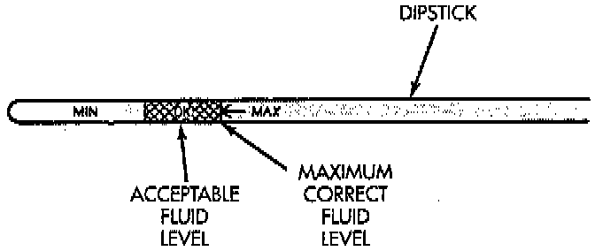

Fluid Level Check
NOTE: Transmission fluid level should be checked monthly under normal operation. If the vehicle is used for trailer towing or similar heavy load hauling, check fluid level and condition weekly. Fluid level is checked with the engine running at curb idle speed, the transmission in NEUTRAL and the transmission fluid at normal operating temperature.
PROCEDURE
1. Transmission fluid must be at normal operating temperature for accurate fluid level check. Drive vehicle if necessary to bring fluid temperature up to normal hot operating temperature of 82°C (180°F).
2. Position vehicle on level surface.
3. Start and run engine at curb idle speed.
4. Apply parking brakes.
5. Shift transmission momentarily into all gear ranges. Then shift transmission back to Neutral.
6. Clean top of filler tube and dipstick to keep dirt from entering tube.
7. Remove dipstick and check fluid level as follows:
a. Correct acceptable level is in crosshatch area.
b. Correct maximum level is to MAX arrow mark.
c. Incorrect level is at or below MIN line.
d. If fluid is low, add only enough MOPAR ATF+4 to restore correct level. Do not overfill.
CAUTION: Do not overfill the transmission. Overfilling may cause leakage out the pump vent which can be mistaken for a pump seal leak. Overfilling will also cause fluid aeration and foaming as the excess fluid is picked up and churned by the gear-train. This will significantly reduce fluid life.